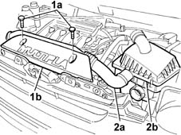
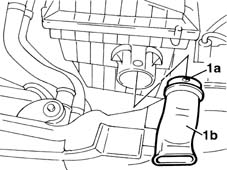

1048A23 cold air intake - r r
- Path
- Procedures > 10 ENGINE UNIT > 1048 ENGINE AIR SUPPLY CIRCUIT > 1048A VACUUM AIR CIRCUIT > 1048A23 cold air intake - r r
- Kind
- repair procedure (removal / refitting; the operation number is the code)
- Applies to
- all engines; all production periods
- Interactive page
- https://sloeber94.github.io/elrnDB-fMltpl/en/#/2891256
Applies to: engines: 1.6 16v; all production periods
 Removing
Removing
 Refitting
Refitting1. Undo the two bolts (1a) fixing the bulkhead (1b) and remove it.
2. Release the hose (2a) from the air filter casing (2b) and remove it.

Applies to: engines: 1.6 16v; all production periods
Refitting
RemovingCheck that the air intake is not damaged.
Position the air intake and fit into its seat on the filter case.
Check that the pins are properly fitted.
Applies to: engines: 1.9 JTD 8V; all production periods
Removing
Refitting1. Press pins (1a) to withdraw air intake (1b) from the air cleaner case.

Applies to: engines: 1.9 JTD 8V; all production periods
Refitting
RemovingCheck that the air intake is undamaged.
Position the air intake and fit into its seat on the filter case.
Check that the pins are properly fitted.